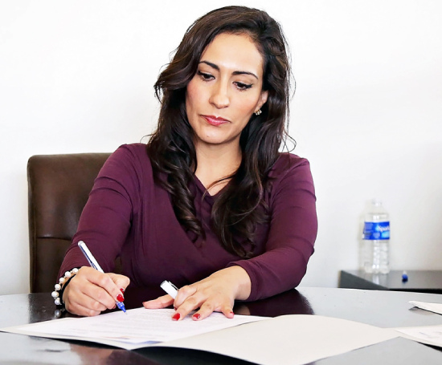
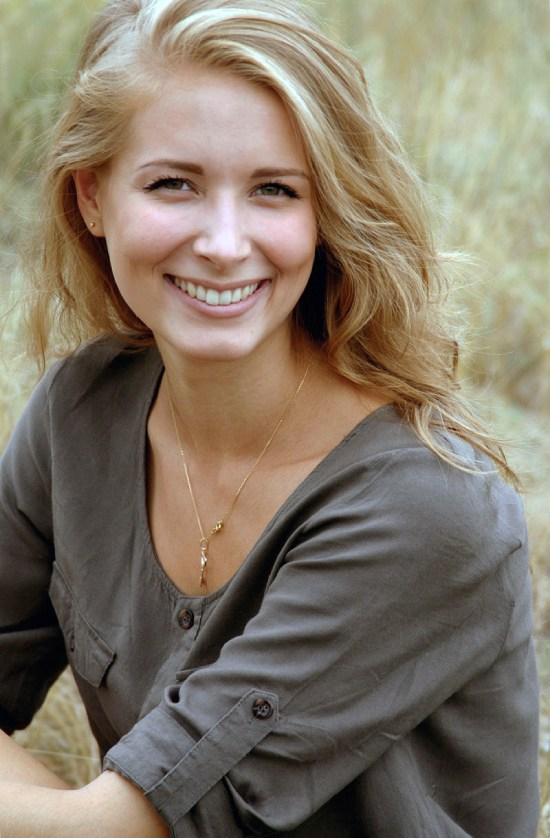
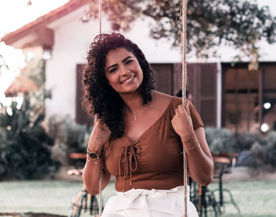
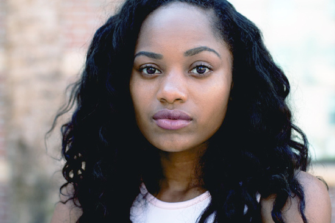

☰
About Us
About the Groningen University Institute for the Development of Education
We are a University of Groningen related non-profit organisation that brings together visionaries in the field of academics, education and communication.
We started in April 2022 and have grown to an organisation of 4 staff-members and several volunteers.
These permanent staff-members are:
Johanna "Hanny" B. Smith
Director at 050Learn.nl. She maintains an impressive social network and tries to attend every educational event that takes place in Groningen.
People love her enthusiasm for Groningen and its beauty. When she's not working (which is a rare thing) she is also a part-time photographer.
In her local prize-winning photos, you can see her keen eye for detail.

Temyra "the Face" Peckleton
Temyra is a part-time lecturer at the RUG who loves to challenge herself on a daily basis.
She's nicknamed 'the Face' for her ability to attract publicity and focus this on every project she's involved in.

Helen Madeline "Maddie" Murdow
In Maddie's every day life she is, besides a lecturer at the Faculty of Arts, an helicopter pilot and very active on social media.
Her Instagram account has more than 19.000 followers.
In her posts she reflects on fun chopper trips in and around Groningen, and occasionally invites her insta-fans to fly with her.

Barbara "B.A." Baracchi
Barbara is our latest staff member. She loves to drink milk and is mostly interested in technical stuff.
As a Communication student she began a YouTube channel, repairing gadgets, which now has more than 41.000 subscribers.
